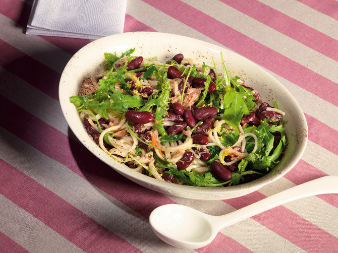

Февраль 20, 2022 Автор: Ксения Шустова
Бобовые — идеальный аккомпанемент в любом гастрономическом сочетании, без которого при этом можно
вполне обойтись. Но лучше не надо. Каждый представитель бобового семейства способен на занятные
гастрономические альянсы.
Белая фасоль со сладким чили-соусом
Эту фасоль можно есть холодной, а можно слегка подогреть. Не тушить, а только подогреть. Сладкий
перец и прочая свежая огородная растительность должны оставаться пусть теплыми, но все-таки сырыми.
Рецепт
тут.
Похлебка из маша с мятой
Аккуратные бобы, лопающиеся на зубах, как большие зеленые икринки, в Средней Азии называют горохом
маш, в остальной Азии — мунг, а в Европе они продаются под именем зеленой сои. С соей маш вообще
постоянно ассоциируется. В частности, так называемые соевые проростки — это проростки все того же
маша.
Рецепт тут.
Красная фасоль с тунцом и лапшой

В англосаксонской традиции красную фасоль еще называют kidney — за внешнее сходство боба с
анатомической формой почки. С почкой у красной фасоли еще то общее, что у одной и у другой яркий
характерный вкус, не всегда способствующий кулинарной карьере: характер не всем нравится.
Рецепт
тут.
Март 2, 2022 Автор: Людмила Сальникова
Кажется, зачем затеваться с выпечкой, доставать с полки миксер, пачкать противни и дежурить у
духовки, если праздничный торт можно купить в любом супермаркете. Ну, или заказать в ресторане или
хорошей кондитерской, там уж точно можно выбрать вкус, размер, бисквит и начинку.
Торт «Графские развалины»
По самой распространенной версии, торт «Графские развалины» был изобретен как домашний аналог
киевского торта. Оригинал было невозможно достать, разве что привезти аккурат к торжеству поездом из
столицы Украины, зато можно было без проблем изобразить горку из домашних безе, скрепив их тяжелым
масляным кремом, ну а если замысел рушился и торт выходил кривобоким, то «Развалины» все равно
получались вкусными. Позже превращать в «Развалины» стали не только безе, но и бисквитные коржи,
однако классическим все-таки считается вариант с воздушной меренгой. Кстати, в советское время у
торта были и другие забавные называния, например «Кудрявый пинчер» или «Перманент» (из-за сходства с
женскими локонами после перманентной завивки). С размером безе не нужно особо мельчить, тогда их
будет проще собрать в аккуратную горку. А чтобы торт не получился слишком приторным, стоит
сбалансировать сладость безе и крема какой-нибудь фруктовой добавкой — мы добавили вишню и
чернослив.
Рецепт
тут.
Торт «Рыжик»
Тонкие бисквитные коржи, толстый слой сметанного крема, посыпка из того же бисквита… Ничего не
напоминает? Да это же всем известный торт «Медовик», который в начале 60-х годов (так, во всяком
случае, утверждают авторы «Русской кухни в изгнании» Александр Генис и Петр Вайль) внезапно поменял
название. Тогда по радио вовсю крутили песню Эдиты Пьехи «Руды-руды-руды-рык, а по-русски — рыжик»,
вот модное слово и приклеилось к торту. Канонического рецепта «Рыжика» не существует: кто-то
добавляет в крем грецкие орехи, кто-то украшает верхушку торта вишнями или сладкой помадкой. Крем
тоже может быть разным — заварным, сметанным, масляным. Мы выбрали компромиссный вариант крема —
сразу и масляный, и сметанный, и со сгущенкой. Потому что порядочную сметану, которую можно взбить
до состояния густого крема, найти сейчас проблематично, а в сочетании с маслом и сгущенкой крем
хорошо держит форму, и торт не проседает, даже сутки постояв в холодильнике. А вот коржи должны быть
непременно из заварного медового теста.
Рецепт
тут.
Торт «Негр в пене»
Имя изобретателя этой советской рецептуры история не сохранила, и претензии в неполиткорректности
названия сегодня предъявлять некому. Поэтому остановимся исключительно на кулинарных достоинствах
торта. Весь фокус заключается в том, что при добавлении черносмородинового варенья в бисквитное
тесто корж приобретает темно-лиловый оттенок, отсюда у поколения, выросшего на песнях Вертинского, и
возникли определенные ассоциации. Корж готовится на кефире со щепоткой соли и получается пружинистым
и пористым. А пропитавшись сметанным кремом — немного влажным и очень нежным. В результате по
«плывущей» текстуре торт слегка напоминает итальянское тирамису, но со звонкой черносмородиновой
ноткой.
Рецепт
тут.
Февраль 23, 2022 Автор: Екатерина Акимова
Мы отправились в пивной ресторан Krombacher, кухней которого заведует шеф Сергей Астафьев, любитель
пива и мяса. Сергей вспомнил популярные шашлычные маринады, вспомнил вкус разных шашлыков, мясных,
куриных и рыбных, и подобрал к ним пиво, которое выгодно подчеркнет еду, сгладит ее недостатки и не
затмит достоинства. Вот шесть примеров.
Курица
Куриное мясо бывает двух типов. Во-первых, это белое мясо, из которого состоит куриная грудка,
нейтральное, с неочевидным вкусом. Его хорошо сочетать с тихими маринадами из масла и трав.
Допустим, вы приготовили курицу в легком маринаде с душистыми травами: эстрагоном, тимьяном,
розмарином или с базиликом и чесноком — итальянском стиле. Тут ключевое слово «легкий», потому что с
травами тоже можно перемудрить. В этом случае вам стоит найти такое же легкое пшеничное
нефильтрованное пиво, чтобы не забивать дух шашлыка, а наоборот, слегка его дополнить. Получится
идеальный союз — травы не навредят пиву, и наоборот. Никаких конкретных рекомендаций давать не буду
— я обозначил направление, а дальше советую пробовать и искать идеальное сочетание самостоятельно.
Говядина
Если это мраморное мясо и стейковый отруб, то тут стоит брать очень хороший плотный лагер со средней
крепостью. Если это стауты, то пусть будут молочные, или овсяные, чтобы во вкусе преобладала
сладость. Если мы собираемся запекать на огне большие куски мяса, в которых меньше жареной корочки и
больше сочной плоти, то тогда берите качественный траппистский эль — он отлично сложится с большим
куском сочного мяса. Если не получится найти трапписткий, то давайте тогда это будет просто хороший
английский эль. Если же вы решили погрузить говядину в экзотический маринад с фруктами и ягодами, то
ищите подобное вишневому крику. Сейчас много пива с похожей фруктовой интонацией, и можно найти
что-то необыкновенное под стать маринаду. При этом можно совсем погрузиться в детали и найти
фруктовое пиво, но с минимальной сахарозностью.
Телятина
Телятина — это мясо с тонким молочным ароматом, отдающее легкой кислинкой. Мариновать ее лучше всего
спокойными травками: петрушкой, укропом, чуть-чуть тимьяном, слегка чесноком. Брать все это нужно в
малых пропорциях, чтобы не убить нежный вкус мяса. К такому шашлыку, как и к курице, берите мягкое
нефильтрованное пшеничное пиво. Чтобы во время поедания шашлыка легкие мясные ноты никуда не
девались.
Свинина
Свинина, как ее ни готовь, идеально сочетается с пивом. К свинине подходит огромное количество разных
сортов пива, но тут также многое зависит от маринада. Если мы готовим шашлык из шеи, а маринад
представляет собой соль, оливковое масло и перец, которые не забивают вкус мяса, то тут у нас
огромный выбор: бери лагер, бери портер, бери IPA, бери APA. А если мы говорим про какое-то жирное
свиное мясо, например шашлык из свиного брюха, то тут лучше подобрать острый маринад, который
поможет усвоить жиры. И тогда лучше всего брать густой темный эль с карамельным оттенком во вкусе —
он немного сгладит остроту и при этом подчеркнет вкус мяса. И вполне допустимо, если у такого эля
будут нотки цитруса или ореха: это все обогатит жирную свинину. Если нам достался банальный свиной
шашлык в луковом маринаде и уксусе, то я бы советовал брать индийский эль, американский эль и лагер.
Но надо пробовать, могут быть нюансы. Допустим, если уксуса оказалось слишком много — а так бывает,
если это покупной шашлык, — то кислоту можно попытаться скрыть горьким лагером, горьким пивом IPA.
Горечь — это тот вкус, который смывает все на своем пути. А если вы едите свиной шашлык с
грузинскими соусами ткемали или сацебели, то попробуйте к ним взять пиво со вкусом томата — это
будет идеальный, беспроигрышный союз. Или и вовсе — коктейль мичелада, который сделан на основе
пива.
Баранина
Так как баранина — сладкое мясо, то тут нужна сладость и в напитке, а значит, ищем карамельные сорта
пива: стауты и некоторые виды портеров. И вот тут самое лучшее — отправиться в магазин с большим
выбором пива и попросить консультанта найти максимально карамельные сорта. Например, я нашел для
себя совсем удивительный ореховый портер, не очень сладкий, не очень горький, похожий на
газированный компот из лесных орехов, — вот к баранине такое подойдет на пятерку. Также здорово с
бараниной могут сочетаться плотные сорта пива. Чем больше плотность, тем лучше. Интересно, если в
темном пиве встретятся цветочные оттенки. Получится здорово. А если вы подаете баранину с соусом
наршараб, то попробуйте взять вишневое пиво — и в соусе, и в пиве есть кисло-сладкие оттенки, и они
идеально подружатся. На мой взгляд, будет здорово.
Красная рыба
Лосось, семга, форель — все они должны быть порезаны крупными кусками, чтобы рыба после пребывания на
огне сохранила свою сочность. Вот с таким шашлыком будет отлично сочетаться пиво радлер или
какое-нибудь другое пиво с цитрусовыми оттенками. Рыба очень хорошо реагирует на эту кислоту и ярче
раскрывается.


 В начало
В начало